Typical function spaces that we will consider are spaces of functions from some
interval  to
to
 (for some
(for some
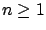
). Different spaces result from placing different requirements on the regularity of these functions. For example, we will frequently work with the function space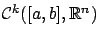
, whose elements are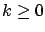
is an integer; for
We regard these function spaces as linear
vector spaces over
 . Why are they infinite-dimensional?
One way to see this is to observe that the
monomials
. Why are they infinite-dimensional?
One way to see this is to observe that the
monomials
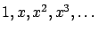
are linearly independent. Another example of an infinite set of linearly independent functions is provided by the (trigonometric) Fourier basis.
As we already mentioned, we also need to equip our function space
 with a norm
with a norm  . This is a real-valued
function on
. This is a real-valued
function on  which is
positive definite (
which is
positive definite (
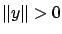
if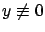
), homogeneous (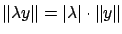
for all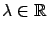
,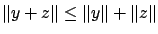
). The norm gives us the notion of a distance, or metric,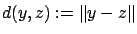
. This allows us to define local minima and enables us to talk about topological concepts such as convergence and continuity (more on this in Section 1.3.4 below). We will see how the norm plays a crucial role in the subsequent developments.On the space
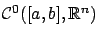
, a commonly used norm is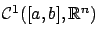
, another natural candidate for a norm is obtained by adding the 0 -norms of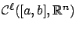
for all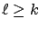
. There exist many other norms, such as for example the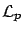
norm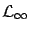
norm.
We are now ready to formally define local minima of a functional. Let  be a
vector space of functions equipped with a norm
be a
vector space of functions equipped with a norm  , let
, let  be a subset
of
be a subset
of  , and let
, and let  be a real-valued functional defined on
be a real-valued functional defined on  (or just on
(or just on  ). A function
). A function
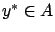
is a local minimum of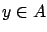
satisfying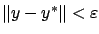
we have
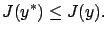
Note that this definition of a local minimum is completely analogous to the one in the previous section, modulo the change of notation
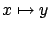
,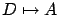
,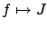
, (also, implicitly,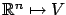
). Strict minima, global minima, and the corresponding notions of maxima are defined in the same way as before. We will continue to refer to minima and maxima collectively as extrema.
For the norm  , we will typically use either
the 0
-norm (1.30) or the
, we will typically use either
the 0
-norm (1.30) or the
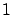
-norm (1.31), with